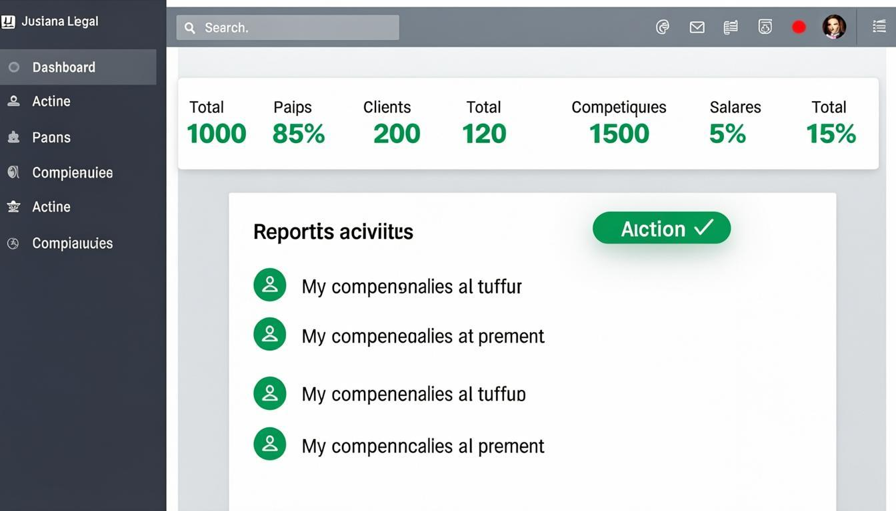

Chapitre 1
Introduction
Bienvenue dans le manuel d'utilisation de JurisLink pour le profil Associé. En tant qu'associé du cabinet, vous disposez du niveau d'accès le plus élevé après l'administrateur de cabinet. Vous pouvez consulter, créer et modifier l'ensemble des dossiers, clients, documents, factures, tâches et événements du cabinet.
Votre rôle vous permet de superviser l'activité du cabinet, de gérer les dossiers stratégiques, de suivre la facturation et d'accéder aux rapports détaillés. Vous disposez également de l'accès aux journaux d'audit pour le suivi des opérations du système.
Résumé de vos capacités :
✓Dossiers & ClientsConsultation, création, modification et export. Suppression non autorisée.
✓DocumentsConsultation, création, modification, suppression et export complets.
✓Factures, Tâches, ÉvénementsConsultation, création, modification et export. Suppression non autorisée.
✓Rapports & AuditConsultation, création/export des rapports. Accès aux journaux d'audit.
✓Messagerie & NotificationsEnvoi et consultation de messages. Gestion des notifications.
Chapitre 2
Premiers pas
Connexion à l'application
1Accéder à l'écran de connexionLancez JurisLink depuis votre navigateur. L'écran de connexion s'affiche avec les champs Identifiant et Mot de passe.
2Saisir vos identifiantsEntrez votre identifiant professionnel et votre mot de passe dans les champs prévus à cet effet. Les identifiants vous sont communiqués par l'administrateur du cabinet.
3Valider la connexionCliquez sur le bouton « Se connecter ». Si vos identifiants sont corrects, vous accédez directement au tableau de bord Associé.
Conseil
En cas d'oubli de mot de passe, contactez l'administrateur du cabinet pour le réinitialiser. Ne partagez jamais vos identifiants.
Présentation du tableau de bord
Le tableau de bord Associé est votre point d'entrée principal. Il affiche un résumé global de l'activité du cabinet : nombre de dossiers actifs, factures en attente, tâches à traiter, événements à venir et indicateurs financiers.

Figure 1 — Tableau de bord de l'Associé
Navigation dans le menu latéral
Le menu latéral, situé à gauche de l'écran, donne accès à toutes les sections de l'application : Dossiers, Clients, Documents, Factures, Tâches, Agenda, Messages, Rapports et Paramètres. Cliquez sur un élément du menu pour accéder directement à la section correspondante.